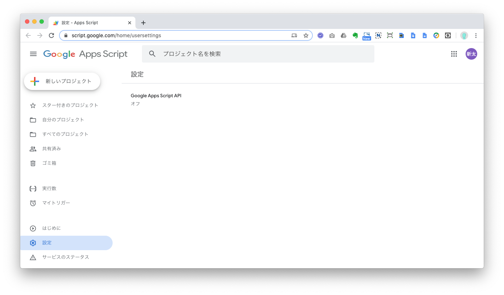
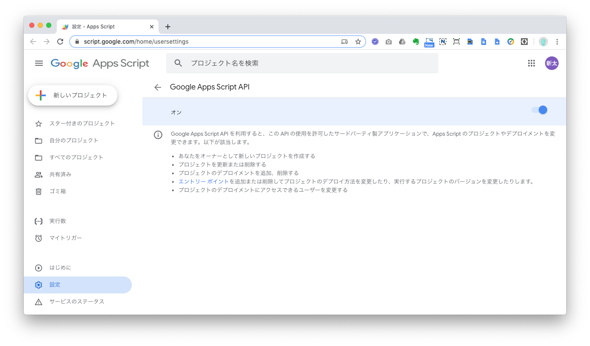
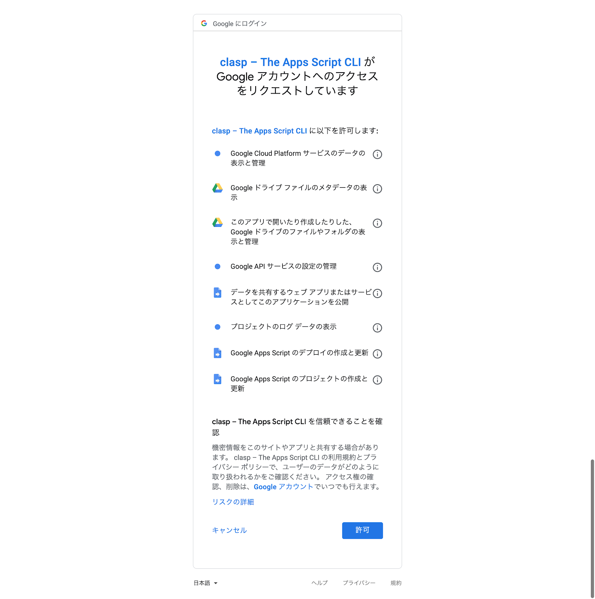

Google Apps Script は Google が提供しているスクリプトエディタでコーディングすることができます。Google Chrome があれば実装をすることができるのが Google Apps Script の強みではあるのですが、その反面「好きなエディタで実装することができない！」や「Git で管理することができない！」といった問題があります。
Google はこれらの問題を提供する clasp というツールを提供しています。
この clasp を利用すると Google Apps Script をローカルの好きなエディタで実装することができます。
ローカルに開発環境を整備しなければなりませんが、Google Apps Script でチーム開発をする場合は必須と言っても過言ではありません。
clasp はnpmでインストールすることができるので、まずはNode.jsとnpmがインストールされているかを下記のコマンドで確認しましょう。
もし、それぞれのバージョンが表示されなかった場合は、インストールされていない状態なのでインストールをしてください。
$ node -v v12.14.1 $ npm -v 6.13.4
Node.js と npm がインストールされていましたら、下記のコマンドで clasp をインストールしましょう。
$ npm install @google/clasp -g
実は clasp をインストールしても、Google アカウントの設定で Google Apps Script APIを有効にしなければ clasp を利用することはできません。
下記リンク先で Google Apps Script を有効化することができます。
https://script.google.com/home/usersettings
設定画面の「Google Apps Script API 」の下に「オフ」と表示されていると、
Google Apps Script API が無効化の状態になっています。
「Google Apps Script API 」をクリックしますと、「オン」「オフ」を切り替える画面に遷移します。

遷移先の画面で右端にトグルボタン表示されていますので、
こちらをクリックして左端の文字が「オフ」から「オン」に変われば設定完了です。

それでは早速 clasp を使ってみましょう！
clasp を利用するには下記のコマンドでログインする必要があります。
$ clasp login 🔑 Authorize clasp by visiting this url: https://accounts.google.com/o/oauth2/v2/auth?access_type=offline&scope=https%3A%2F%2Fwww.googleapis.com...
コマンドを実行すると Google Chrome が起動し、ログインするアカウントを選択するように求められます。
アカウントを選択すると下記の画面が表示されるので、画面最下部の[許可]ボタンをクリックしてください。

コンソール上に下記のようなメッセージが表示されましたらログイン成功です。
Default credentials saved to: ~/.clasprc.json (/Users/XXXX/.clasprc.json).
別のアカウントに切り替えたいなどの理由でログアウトしたい場合は下記のコマンドでログアウトすることができます。
$ clasp logout
これでローカルで Google Apps Script の実装ができるようになりました！